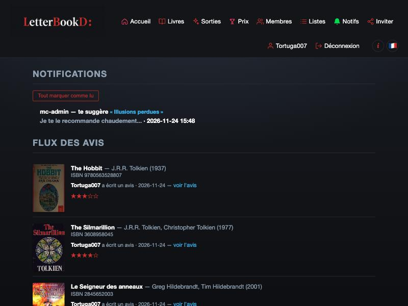

Notifications
À quoi ça sert : Rassembler tout ce qui te concerne personnellement : suggestions reçues d'autres membres, réactions sur tes avis, commentaires sous tes avis. Et plus bas, le flux de tous les avis récents de ton club.

Parcours
La page a deux sections. 'Notifications' en haut : une ligne par événement, avec pseudo de l'émetteur, type d'action ('te suggère', 'a réagi à', 'a commenté') et un lien vers le livre/avis concerné. Un bouton 'Tout marquer comme lu' efface le badge sur la cloche. En bas, 'Flux des avis' : les avis récents postés dans ton club, chacun avec couverture, livre, auteur du livre, auteur de l'avis et note en étoiles, plus un lien 'voir l'avis'.
Chaînes d'action
Chaque ligne décrit un déclencheur dans l'interface, ce qu'il ouvre (modal ou formulaire), et l'effet produit.
| Déclencheur | Modal / Champs | Effet |
|---|---|---|
| Bouton 'Tout marquer comme lu' | Formulaire POST. | Marque toutes tes notifications comme lues. La cloche en haut à droite passe du vert au gris. Les notifications restent visibles en historique mais ne sont plus comptées comme non lues. |
| Lien dans une notification (titre du livre, 'voir l'avis') | — | Ouvre le contexte : fiche du livre, ancre vers l'avis commenté. |
| Lien 'voir l'avis' dans le flux | — | Ouvre la fiche du livre positionnée sur l'avis en question. |